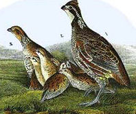

| Home | accomodation | location | Mail us | |
The Partridge HotelGetting to usBY ROAD: Partridge Hotel is equidistant Dereham and Swaffham, just off the A47 - Wendling turn off. If you are using satellite navigation we recommend using the following post code: NR19 2NA. BY TRAIN: We recommend travelling to Norwich, Downham Market or King’s Lynn stations. Norwich is 25 mins and runs to Liverpool Street. Both Downham Market and King’s Lynn are on the same line from London Kings Cross, and both are 20 minutes from Swaffham by car. Most travellers prefer Downham Market as it is easier to travel to and from. Always check train times are up to date by either calling National Railway Enquiries on 08457 484950 or online at www.nationalrail.co.uk. TAXIS: A taxi rank is opposite Boots in the centre of Swaffham, and outside all train stations. Our most regularly used taxi services are: Breckland Taxis: 0870 879 2608 - Dereham Cool Cabs: 01760 724988 - Swaffham If you have any problems arranging taxis or if in any event you have a problem on arrival at the train station, just give us a call here at Partridge. We will always be happy to help! BY BUS: Should you travel to King’s Lynn, there is an excellent bus service called the X-1 (First Travel) that travels from Peterborough, via Kings Lynn, Swaffham and Dereham to Norwich. There is also a National Express service from London Victoria to Swaffham and Dereham direct.Timetables can be found via www.firstgroup.com/ukbus/ |